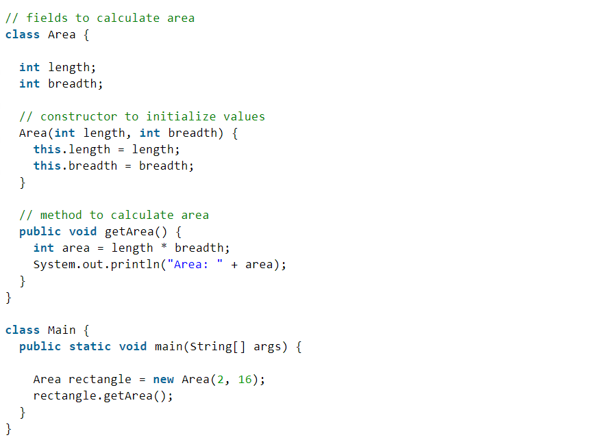
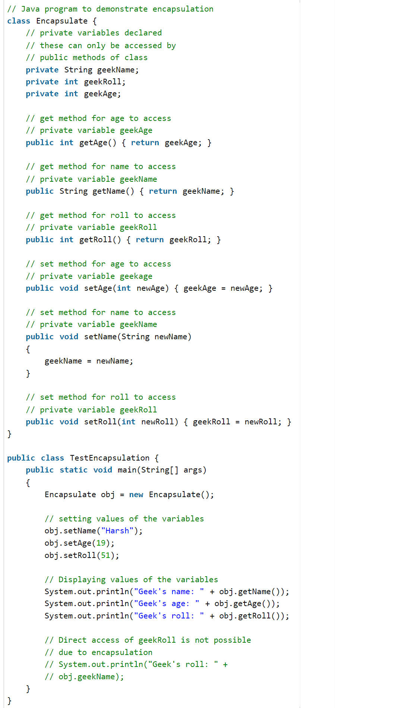
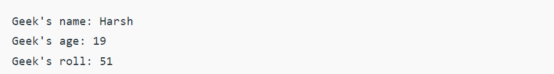
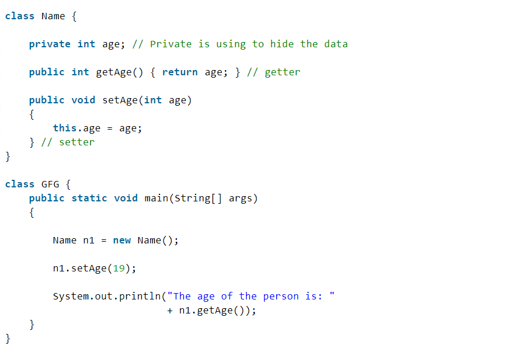
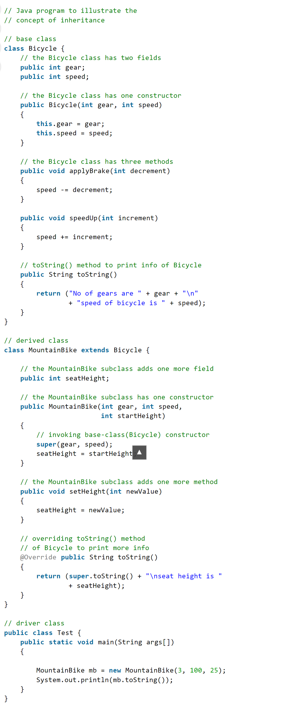
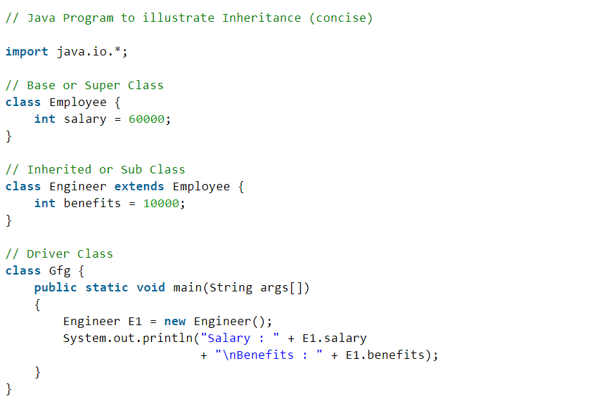

As the name suggests, Object-Oriented Programming or OOPs refers to languages that use objects in programming. Object-oriented programming aims to implement real-world entities like inheritance, hiding, polymorphism, etc in programming. The main aim of OOP is to bind together the data and the functions that operate on them so that no other part of the code can access this data except that function.
OOPs Concepts:
- Class
- Objects
- Data Abstraction
- Encapsulation
- Inheritance
- Polymorphism
- Dynamic Binding
- Message Passing
1. Class:
A class is a user-defined data type. It consists of data members and member functions, which can be accessed and used by creating an instance of that class. It represents the set of properties or methods that are common to all objects of one type. A class is like a blueprint for an object.
For Example: Consider the Class of Cars. There may be many cars with different names and brands but all of them will share some common properties like all of them will have 4 wheels, Speed Limit, Mileage range, etc. So here, Car is the class, and wheels, speed limits, mileage are their properties.
2. Object:
It is a basic unit of Object-Oriented Programming and represents the real-life entities. An Object is an instance of a Class. When a class is defined, no memory is allocated but when it is instantiated (i.e. an object is created) memory is allocated. An object has an identity, state, and behavior. Each object contains data and code to manipulate the data. Objects can interact without having to know details of each others data or code, it is sufficient to know the type of message accepted and type of response returned by the objects.
For example “Dog” is a real-life Object, which has some characteristics like color, Breed, Bark, Sleep, and Eats.
3. Data Abstraction:
Data abstraction is one of the most essential and important features of object-oriented programming. Data abstraction refers to providing only essential information about the data to the outside world, hiding the background details or implementation. Consider a real-life example of a man driving a car. The man only knows that pressing the accelerators will increase the speed of the car or applying brakes will stop the car, but he does not know about how on pressing the accelerator the speed is increasing, he does not know about the inner mechanism of the car or the implementation of the accelerator, brakes, etc in the car. This is what abstraction is.
4. Encapsulation:
Encapsulation is defined as the wrapping up of data under a single unit. It is the mechanism that binds together code and the data it manipulates. In Encapsulation, the variables or data of a class are hidden from any other class and can be accessed only through any member function of their class in which they are declared. As in encapsulation, the data in a class is hidden from other classes, so it is also known as data-hiding.

Consider a real-life example of encapsulation, in a company, there are different sections like the accounts section, finance section, sales section, etc. The finance section handles all the financial transactions and keeps records of all the data related to finance. Similarly, the sales section handles all the sales-related activities and keeps records of all the sales. Now there may arise a situation when for some reason an official from the finance section needs all the data about sales in a particular month. In this case, he is not allowed to directly access the data of the sales section. He will first have to contact some other officer in the sales section and then request him to give the particular data. This is what encapsulation is. Here the data of the sales section and the employees that can manipulate them are wrapped under a single name “sales section”.
5. Inheritance:
Inheritance is an important pillar of OOP(Object-Oriented Programming). The capability of a class to derive properties and characteristics from another class is called Inheritance. When we write a class, we inherit properties from other classes. So when we create a class, we do not need to write all the properties and functions again and again, as these can be inherited from another class that possesses it. Inheritance allows the user to reuse the code whenever possible and reduce its redundancy.

6. Polymorphism:
The word polymorphism means having many forms. In simple words, we can define polymorphism as the ability of a message to be displayed in more than one form. For example, A person at the same time can have different characteristics. Like a man at the same time is a father, a husband, an employee. So the same person posses different behavior in different situations. This is called polymorphism.

7. Dynamic Binding:
In dynamic binding, the code to be executed in response to the function call is decided at runtime. Dynamic binding means that the code associated with a given procedure call is not known until the time of the call at run time. Dynamic Method Binding One of the main advantages of inheritance is that some derived class D has all the members of its base class B. Once D is not hiding any of the public members of B, then an object of D can represent B in any context where a B could be used. This feature is known as subtype polymorphism.
8. Message Passing:
It is a form of communication used in object-oriented programming as well as parallel programming. Objects communicate with one another by sending and receiving information to each other. A message for an object is a request for execution of a procedure and therefore will invoke a function in the receiving object that generates the desired results. Message passing involves specifying the name of the object, the name of the function, and the information to be sent.Why do we need object-oriented programming
- To make the development and maintenance of projects more effortless.
- To provide the feature of data hiding that is good for security concerns.
- We can solve real-world problems if we are using object-oriented programming.
- It ensures code reusability.
- It lets us write generic code: which will work with a range of data, so we dont have to write basic stuff over and over again.
Encapsulation is defined as the wrapping up of data under a single unit. It is the mechanism that binds together code and the data it manipulates. Another way to think about encapsulation is, that it is a protective shield that prevents the data from being accessed by the code outside this shield.
- Technically in encapsulation, the variables or data of a class is hidden from any other class and can be accessed only through any member function of its own class in which it is declared.
- As in encapsulation, the data in a class is hidden from other classes using the data hiding concept which is achieved by making the members or methods of a class private, and the class is exposed to the end-user or the world without providing any details behind implementation using the abstraction concept, so it is also known as a combination of data-hiding and abstraction.
- Encapsulation can be achieved by Declaring all the variables in the class as private and writing public methods in the class to set and get the values of variables.
- It is more defined with the setter and getter method.
Advantages of Encapsulation:
- Data Hiding: it is a way of restricting the access of our data members by hiding the implementation details. Encapsulation also provides a way for data hiding. The user will have no idea about the inner implementation of the class. It will not be visible to the user how the class is storing values in the variables. The user will only know that we are passing the values to a setter method and variables are getting initialized with that value.
- Increased Flexibility: We can make the variables of the class read-only or write-only depending on our requirement. If we wish to make the variables read-only then we have to omit the setter methods like setName(), setAge(), etc. from the above program or if we wish to make the variables write-only then we have to omit the get methods like getName(), getAge(), etc. from the above program
- Reusability: Encapsulation also improves the re-usability and is easy to change with new requirements.
- Testing code is easy: Encapsulated code is easy to test for unit testing.


Output
The program to access variables of the class EncapsulateDemo is shown below:
Output
In the above program, the class Encapsulate is encapsulated as the variables are declared as private. The get methods like getAge() , getName() , getRoll() are set as public, these methods are used to access these variables. The setter methods like setName(), setAge(), setRoll() are also declared as public and are used to set the values of the variables.
Output


Output
Advantages of Encapsulation in Java:
- Improves security of an object’s internal state by hiding it from the outside world.
- Increases modularity and maintainability by making it easier to change the implementation without affecting other parts of the code.
- Enables data abstraction, allowing objects to be treated as a single unit.
- Allows for easy addition of new methods and fields without affecting the existing code.
- Allows for easy addition of new methods and fields without affecting the existing code.
Disadvantages of Encapsulation in Java:
- Can lead to increased complexity, especially if not used properly.
- Can make it more difficult to understand how the system works.
- May limit the flexibility of the implementation.
Inheritance is an important pillar of OOP(Object-Oriented Programming). It is the mechanism in java by which one class is allowed to inherit the features(fields and methods) of another class. In Java, inheritance means creating new classes based on existing ones. A class that inherits from another class can reuse the methods and fields of that class. In addition, you can add new fields and methods to your current class as well.
Inheritance in Java: Why do we need it?
- Code Reusability: The code written in the Superclass is common to all subclasses. Child classes can directly use the parent class code.
- Method Overriding: Method Overriding is achievable only through Inheritance. It is one of the ways by which java achieves Run Time Polymorphism.
- Abstraction: The concept of abstract where we do not have to provide all details is achieved through inheritance. Abstraction only shows the functionality to the user.
Important terminologies used in Inheritance:
- Class: Class is a set of objects which shares common characteristics/ behavior and common properties/ attributes. Class is not a real-world entity. It is just a template or blueprint or prototype from which objects are created.
- Super Class/Parent Class: The class whose features are inherited is known as a superclass(or a base class or a parent class).
- Sub Class/Child Class: The class that inherits the other class is known as a subclass(or a derived class, extended class, or child class). The subclass can add its own fields and methods in addition to the superclass fields and methods.
- Reusability: Inheritance supports the concept of “reusability”, i.e. when we want to create a new class and there is already a class that includes some of the code that we want, we can derive our new class from the existing class. By doing this, we are reusing the fields and methods of the existing class.
How to use inheritance in Java?
The extends keyword is used for inheritance in java. Using the extends keyword indicates you are derived from an existing class. In other words, “extends” refers to increased functionality.
Syntax :
class derived-class extends base-class
{
//methods and fields
}
Example: In the below example of inheritance, class Bicycle is a base class, class MountainBike is a derived class that extends the Bicycle class and class Test is a driver class to run the program.
Output:
In the above program, when an object of MountainBike class is created, a copy of all methods and fields of the superclass acquires memory in this object. That is why by using the object of the subclass we can also access the members of a superclass.
Example 2: In the below example of inheritance, class Employee is a base class, class Engineer is a derived class that extends the Employee class and class Test is a driver class to run the program.
Output:
Illustrative image of the program:

Types of Inheritance in Java
Below are the different types of inheritance which are supported by Java.
1. Single Inheritance
In single inheritance, subclasses inherit the features of one superclass. In the image below, class A serves as a base class for the derived class B.

2. Multilevel Inheritance
In Multilevel Inheritance, a derived class will be inheriting a base class, and as well as the derived class also acts as the base class for other classes. In the below image, class A serves as a base class for the derived class B, which in turn serves as a base class for the derived class C. In Java, a class cannot directly access the grandparent’s members.

3. Hierarchical Inheritance
In Hierarchical Inheritance, one class serves as a superclass (base class) for more than one subclass. In the below image, class A serves as a base class for the derived classes B, C, and D.

4. Multiple Inheritance (Through Interfaces)
In Multiple inheritances, one class can have more than one superclass and inherit features from all parent classes. Please note that Java does not support multiple inheritances with classes. In java, we can achieve multiple inheritances only through Interfaces. In the image below, Class C is derived from interfaces A and B.

5. Hybrid Inheritance(Through Interfaces)
It is a mix of two or more of the above types of inheritance. Since java doesn’t support multiple inheritances with classes, hybrid inheritance is also not possible with classes. In java, we can achieve hybrid inheritance only through Interfaces.

Important facts about inheritance in Java
- Default superclass: Except Object class, which has no superclass, every class has one and only one direct superclass (single inheritance). In the absence of any other explicit superclass, every class is implicitly a subclass of the Object class.
- Superclass can only be one: A superclass can have any number of subclasses. But a subclass can have only one superclass. This is because Java does not support multiple inheritances with classes. Although with interfaces, multiple inheritances are supported by java.
- Inheriting Constructors: A subclass inherits all the members (fields, methods, and nested classes) from its superclass. Constructors are not members, so they are not inherited by subclasses, but the constructor of the superclass can be invoked from the subclass.
- Private member inheritance: A subclass does not inherit the private members of its parent class. However, if the superclass has public or protected methods(like getters and setters) for accessing its private fields, these can also be used by the subclass.
What can be done in a Subclass?
In sub-classes we can inherit members as is, replace them, hide them, or supplement them with new members:
- The inherited fields can be used directly, just like any other fields.
- We can declare new fields in the subclass that are not in the superclass.
- The inherited methods can be used directly as they are.
- We can write a new instance method in the subclass that has the same signature as the one in the superclass, thus overriding it (as in the example above, toString() method is overridden).
- We can write a new static method in the subclass that has the same signature as the one in the superclass, thus hiding it.
- We can declare new methods in the subclass that are not in the superclass.
- We can write a subclass constructor that invokes the constructor of the superclass, either implicitly or by using the keyword super.
Advantages Of Inheritance in Java:
- Code Reusability: Inheritance allows for code reuse and reduces the amount of code that needs to be written. The subclass can reuse the properties and methods of the superclass, reducing duplication of code.
- Abstraction: Inheritance allows for the creation of abstract classes that define a common interface for a group of related classes. This promotes abstraction and encapsulation, making the code easier to maintain and extend.
- Class Hierarchy: Inheritance allows for the creation of a class hierarchy, which can be used to model real-world objects and their relationships.
- Polymorphism: Inheritance allows for polymorphism, which is the ability of an object to take on multiple forms. Subclasses can override methods of the superclass, which allows them to change their behavior in different ways.
Disadvantages of Inheritance in Java:
- Complexity: Inheritance can make the code more complex and harder to understand. This is especially true if the inheritance hierarchy is deep or if multiple inheritances is used.
- Tight Coupling: Inheritance creates a tight coupling between the superclass and subclass, making it difficult to make changes to the superclass without affecting the subclass.
Reference book:
- “Head First Java” by Kathy Sierra and Bert Bates
- “Java: A Beginner’s Guide” by Herbert Schildt
- “Java: The Complete Reference” by Herbert Schildt
- “Effective Java” by Joshua Bloch
- “Java: The Good Parts” by Jim Waldo.
The word polymorphism means having many forms. In simple words, we can define polymorphism as the ability of a message to be displayed in more than one form.
A person at the same time can have different characteristics. Like a man at the same time is a father, a husband, an employee. So the same person possesses different behavior in different situations. This is called polymorphism.
Polymorphism is considered one of the important features of Object-Oriented Programming. Polymorphism allows us to perform a single action in different ways. In other words, polymorphism allows you to define one interface and have multiple implementations. The word “poly” means many and “morphs” means forms, So it means many forms.
Types of polymorphism
In Java polymorphism is mainly divided into two types:
- Compile-time Polymorphism
- Runtime Polymorphism
Type 1: Compile-time polymorphism
It is also known as static polymorphism. This type of polymorphism is achieved by function overloading or operator overloading.
Note: But Java doesn’t support the Operator Overloading.

Method Overloading: When there are multiple functions with the same name but different parameters then these functions are said to be overloaded. Functions can be overloaded by changes in the number of arguments or/and a change in the type of arguments.
Subtypes of Compile-time Polymorphism:
- Function Overloading: It is a feature in C++ where multiple functions can have the same name but with different parameter lists. The compiler will decide which function to call based on the number and types of arguments passed to the function.
- Operator Overloading: It is a feature in C++ where the operators such as +, -, * etc. can be given additional meanings when applied to user-defined data types.
- template: it is a powerful feature in C++ that allows us to write generic functions and classes. A template is a blueprint for creating a family of functions or classes.
Type 2: Runtime Polymorphism
It is also known as Dynamic Method Dispatch. It is a process in which a function call to the overridden method is resolved at Runtime. This type of polymorphism is achieved by Method Overriding. Method overriding, on the other hand, occurs when a derived class has a definition for one of the member functions of the base class. That base function is said to be overridden.
Subtype of Run-time Polymorphism:
Virtual functions: It allows an object of a derived class to behave as if it were an object of the base class. The derived class can override the virtual function of the base class to provide its own implementation. The function call is resolved at runtime, depending on the actual type of the object.

Polymorphism in Java is a concept that allows objects of different classes to be treated as objects of a common class. It enables objects to behave differently based on their specific class type.
Advantages of Polymorphism in Java:
- Increases code reusability by allowing objects of different classes to be treated as objects of a common class.
- Improves readability and maintainability of code by reducing the amount of code that needs to be written and maintained.
- Supports dynamic binding, enabling the correct method to be called at runtime, based on the actual class of the object.
- Enables objects to be treated as a single type, making it easier to write generic code that can handle objects of different types.
Disadvantages of Polymorphism in Java:
- Can make it more difficult to understand the behavior of an object, especially if the code is complex.
- May lead to performance issues, as polymorphic behavior may require additional computations at runtime.
Data Abstraction is the property by virtue of which only the essential details are displayed to the user. The trivial or the non-essential units are not displayed to the user. Ex: A car is viewed as a car rather than its individual components.
Data Abstraction may also be defined as the process of identifying only the required characteristics of an object ignoring the irrelevant details. The properties and behaviors of an object differentiate it from other objects of similar type and also help in classifying/grouping the objects.
Consider a real-life example of a man driving a car. The man only knows that pressing the accelerators will increase the speed of a car or applying brakes will stop the car, but he does not know how on pressing the accelerator the speed is actually increasing, he does not know about the inner mechanism of the car or the implementation of the accelerator, brakes, etc in the car. This is what abstraction is.
In java, abstraction is achieved by interfaces and abstract classes. We can achieve 100% abstraction using interfaces.
Abstract classes and Abstract methods :
- An abstract class is a class that is declared with an abstract keyword.
- An abstract method is a method that is declared without implementation.
- An abstract class may or may not have all abstract methods. Some of them can be concrete methods
- A method-defined abstract must always be redefined in the subclass, thus making overriding compulsory or making the subclass itself abstract.
- Any class that contains one or more abstract methods must also be declared with an abstract keyword.
- There can be no object of an abstract class. That is, an abstract class can not be directly instantiated with the new operator.
- An abstract class can have parameterized constructors and the default constructor is always present in an abstract class.
There are situations in which we will want to define a superclass that declares the structure of a given abstraction without providing a complete implementation of every method. Sometimes we will want to create a superclass that only defines a generalization form that will be shared by all of its subclasses, leaving it to each subclass to fill in the details.
Consider a classic “shape” example, perhaps used in a computer-aided design system or game simulation. The base type is “shape” and each shape has a color, size, and so on. From this, specific types of shapes are derived(inherited)-circle, square, triangle, and so on — each of which may have additional characteristics and behaviors. For example, certain shapes can be flipped. Some behaviors may be different, such as when you want to calculate the area of a shape. The type hierarchy embodies both the similarities and differences between the shapes.

Encapsulation vs Data Abstraction
- Encapsulation is data hiding(information hiding) while Abstraction is detailed hiding(implementation hiding).
- While encapsulation groups together data and methods that act upon the data, data abstraction deal with exposing the interface to the user and hiding the details of implementation.
- Encapsulated classes are java classes that follow data hiding and abstraction while We can implement abstraction by using abstract classes and interfaces.
- Encapsulation is a procedure that takes place at the implementation level, while abstraction is a design-level process.
Advantages of Abstraction
- It reduces the complexity of viewing things.
- Avoids code duplication and increases reusability.
- Helps to increase the security of an application or program as only essential details are provided to the user.
- It improves the maintainability of the application.
- It improves the modularity of the application.
- The enhancement will become very easy because without affecting end-users we can able to perform any type of changes in our internal system.
- Improves code reusability and maintainability.
- Hides implementation details and exposes only relevant information.
- Provides a clear and simple interface to the user.
- Increases security by preventing access to internal class details.
- Supports modularity, as complex systems can be divided into smaller and more manageable parts.
Disadvantages of Abstraction in Java:
- Abstraction can make it more difficult to understand how the system works.
- It can lead to increased complexity, especially if not used properly.
- May limit the flexibility of the implementation.
1. What are the core concepts of OOP?
The core concepts of OOP are Abstraction, Encapsulation, Inheritance, and Polymorphism. Abstraction is the process of concealing complex logic by defining the code in a separate private method by hiding its implementation. Whatever functionality needed to use can be called by using its method identifier to get the result.
The concept of encapsulation is nothing but a Class used to hide the fields that hold data and the methods to perform the functions that can be accessed based on the access modifier. Polymorphism is the process of defining the same method multiple times to utilize based on data types or arguments. There are two types of polymorphism which are called runtime polymorphism and compile-time polymorphism.
2. What is a Class in OOP?
A Class in Object-oriented Programming is ideally called a template or a blueprint of an object. An object of its class type will have the same properties as defined in the implementation of Class. An object will always be a specific instance of a class. A Class can have different subclasses and superclasses. A class can be a child class, or a parent class depends on its declaration. A subclass can have all the properties that its superclass has, whereas the superclass cannot have the subclass’s properties. Another class can extend a class, and it will be called a parent class.
3. What is a constructor in OOP?
A constructor is a method used to invoke the object creation process by initializing the object’s state. The name of the constructor should be the class’s name ideally and may vary depending on the type of programming language. A constructor must not have any return type.
4. What is the Destructor in OOP?
This is the most common OOP Interview Questions which is asked in an interview. A Destructor is a method that is invoked when the object is destroyed or when its’ scope is about to end. The method will be called explicitly or implicitly based on the programming language used. In C++, the destructor needs to be called, whereas in Java, it is not needed, and a garbage collection mechanism will handle it.
5. What is an Abstract class in OOP?
An abstract class is used to define at least one abstract method, but an object cannot be created from it. Classes created using abstract classes are called derived classes. An abstract class will not contain implementation code in its base class. If an abstract class is forced to instantiate an object out of it, a compilation error will be thrown.
6. What are multiple inheritances in OOP?
Multiple inheritances are the process of extending the behaviors of multiple classes by a single class. It creates an ambiguous situation when runtime to decide which class’ behavior has to be executed. C++ supports multiple inheritances, whereas Java doesn’t support them. The ambiguity and complex issues create a diamond problem defined as extending which parent class upon extending multiple classes.
7. What is static and dynamic binding in OOP?
Static binding is also called early binding, which happens at compile-time, whereas Dynamic binding is called late binding, which happens at the time of run time. An example of static binding is method overloading, and dynamic binding is method overriding. The process of binding for static, final and private methods will always be done at compile-time, whereas the overriding is done at runtime. The process of binding overloaded methods is called static, whereas overridden methods are called dynamic.
8. What is operator overloading in OOP?
Operator overloading is sometimes called ad-hoc polymorphism, which is defined as different operators will have different mechanisms based on the placement of operators and the arguments. In operator overloading, the semantics of the programming language is redefined, which is not usually recommended. In the case of the Java programming language, it was decided by the creators not to use this feature as Java is a production language mostly.
9. What is exception handling in OOP?
These are the frequently asked OOP Interview Questions which is asked in an interview. Exception handling is the feature available in most object-oriented programming languages, which are defined as the process of handling exceptions during the execution of program flow. The flow of execution should be altered based on the outcome of the exception of aroused. The general blocks of exception handling include try, catch and throw for most of the programming languages like C++, Java etc. In the try block, the code that needs to be executed will be placed, and the catch block will handle the exception, and the thrown block will return the type of exception and error if it can’t be handled. This is the safest way of handling applications to safeguard the flow of the working application.
10. What are the benefits of OOPS techniques?
The OOPS concepts’ main benefits are modularity, extensibility, simplicity, reusability, maintainability, modifiability, etc. The complexity of the programming can be reduced, and the coding structure can be made clear. The different complex functionalities can be decoupled using different classes and implementation methods around the application. The reusability feature provides minor changes in the code whenever needed, which provides the adaptability for the code changes or functionality changes.
The objects of the different classes can be reused in different implementation classes to use their features completely. The maintenance process becomes easier if the code is maintained in an organised way.